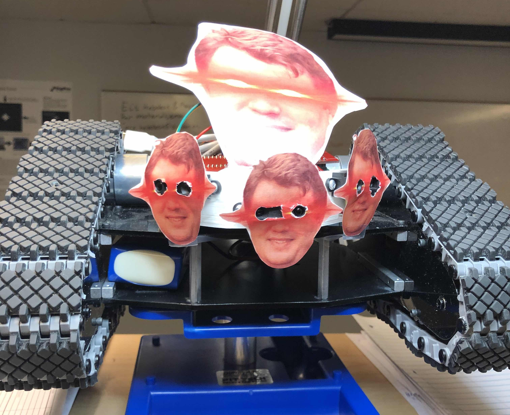

Academic Projects
Co-Developer: Team Kachow
The Dubatron-69: CS100 project
Timeline: August to December 2019
- Goal: Program in ARM Assembly to allow a 'tank' to traverse a course free of human control
- Developed and wrote ARM Assembly code to interface with infrared sensors using ADC for distance gauging
- Used PWM to interface with the motors
- Added PWM buzzers for increased dramatic flair
- Personalized the tank using a front plate for the sensors

Co-Engineer: Team Sunbeam
High-Altitude Solar Array: 1st year ECE project
Timeline: January to May 2020
- Goal: Design a small-scale device given size and weight constraints in a high-altitude balloon
- Used a PIC-8 Microntroller to read in values from a custom voltmeter and ammeter using ADC
- Utilized a cricketsat 555 circuit paired with an antenna to transmit data to the ground station
- Project on indefinite pause during COVID-19 Global Pandemic crisis, to be resumed in spring 2021 or 2022
Co-Engineer: Team Honeycomb
Busy Bee Controller: 2nd year ECE project
Timeline: August 2020 to May 2021
- Team Members: 14
- Total Computer Engineers: 2
- Goal: Create a new and unique experience in a 2D-platformer game
- Develop custom hardware for the game, titled "Vesna".
- Collaboration with another engineer to create a new and unique device
specifically for the game - though its functionality extends beyond the game - Soldered the printed circuit board and designed the CAD model for the chassis

Professional Experience
Teaching Assistant:
CS 100: DigiPen Institute of Technology
Timeline: June 2020 to May 2021
- Assembled and tested lab kits involving the Tiva-C 123 microcontroller for incoming frehsmen
- Developed assignments in ARM Assembly to interface with the microcontroller
- Constructed and tested simple circuits for students to learn how to use basic electronics
- Worked collaboratively with professors and other teaching assistants to assemple and ship kits on time.
Lab Assistant:
Engineering and Physics Departments: DigiPen Institute of Technology
Timeline: September 2020 to May 2021
- Maintained cleanliness and organization of the Engineering and Physics labs
- Restructured and optimized organization of the labs to ensure maximum ergonomic access and accessibility
- Familiarized myself with part-ordering process
Tutor: Computer Science, Electrical and Computer Engineering, Mathematics, Physics
Academic Support Lab: DigiPen Institute of Technology
Timeline: September 2020 to May 2021
- Assisted students in understanding core concepts from courses I had previously taken
- Encouraged students to ask for help and approach problems in new ways
- Utilized and taught dynamic learning mindsets to prevent thought stagnation